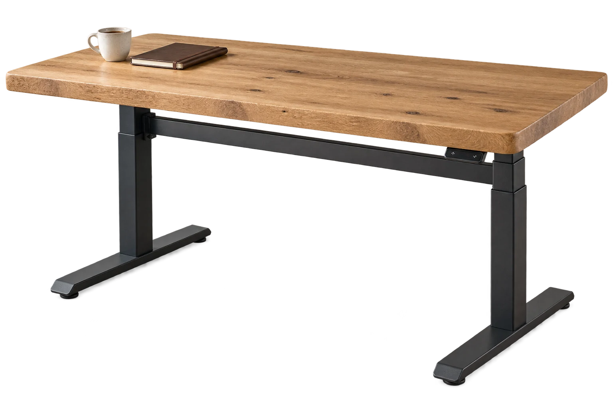
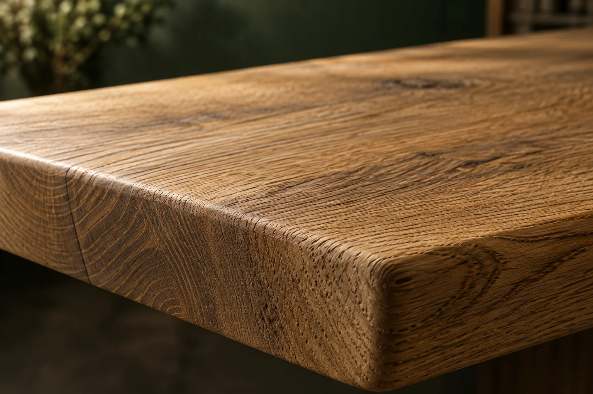

NATURALNE DREWNO. ELEKTRYCZNA REGULACJA.
Drewno.
Na Twoim poziomie.

Ma swój charakter.
I dostosowuje się do Ciebie.
STÓŁ RYCHTIG
Dąb · wizualizacja koncepcyjna
RYCHTIG ZNACZY: JAK NALEŻY.
Dobry stół.
Po prostu Twój.
Do pierwszej kawy. Wielkich pomysłów.
I pracy, która nie stoi w miejscu.
Łączymy charakter drewna z elektryczną regulacją wysokości. Ty wybierasz blat i wymiary. Stół dopasowuje się do Twojego dnia.
TWÓJ DZIEŃ MA WIĘCEJ NIŻ JEDEN POZIOM.
Zmień pozycję.
Zachowaj rytm.
Usiądź do detali. Wstań do nowych pomysłów.
Blat podąża za Tobą.
Ilustracja działania. Zakres regulacji zależy od wybranego stelaża.
Cztery charaktery.
Który jest Twój?
Drewno nie lubi się powtarzać.
Każdy układ słojów opowiada własną historię.

Naturalna różnorodność. Żaden blat nie jest identyczny.Zdjęcie poglądowe i orientacyjne odcienie. Naturalne drewno różni się usłojeniem oraz kolorem.
TWÓJ MATERIAŁ. TWÓJ WYMIAR.
Zrób miejsce
na swój stół.
WIDOK BLATU Z GÓRY
Dąb / 160 × 80 cmWarto wiedzieć.
Czy mogę wybrać własny wymiar?
Tak. Rychtig oferuje różne wymiary blatów. W konfiguratorze wpiszesz swój pomysł, a finalne wymiary i dopasowanie stelaża należy potwierdzić przed zamówieniem.
Jakie drewno mogę wybrać?
Główne warianty to jesion, dąb czerwony, dąb i dąb burgundzki. Każdy blat ma indywidualne usłojenie. Odcień oraz wykończenie warto ustalić na podstawie rzeczywistej próbki.
Jak działa regulacja wysokości?
Elektryczne siłowniki w stelażu unoszą i opuszczają blat. Pozwala to zmieniać pozycję przy stole. Zakres wysokości, sterowanie i pozostałe parametry zależą od wybranego stelaża.
Czy zapis konfiguracji oznacza zamówienie?
Nie. Zapisujesz na swoim urządzeniu plik z wybranym drewnem i wymiarami. Nic nie jest wysyłane. Cena, szczegóły wykonania i termin wymagają osobnego ustalenia.